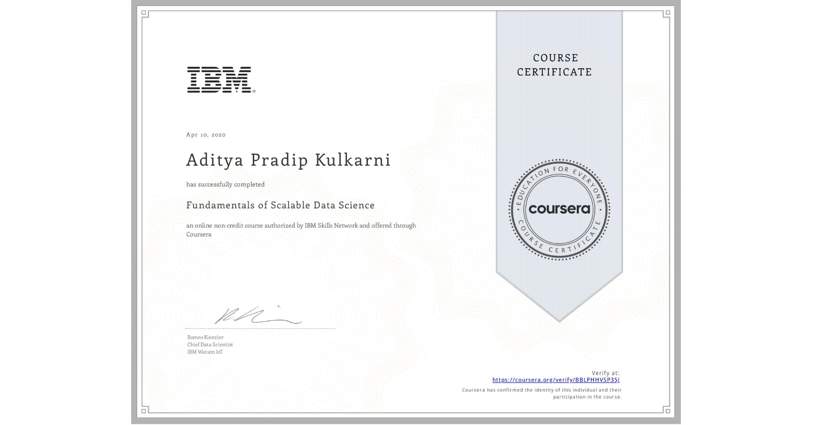
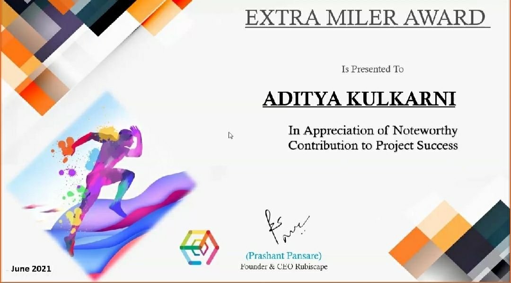
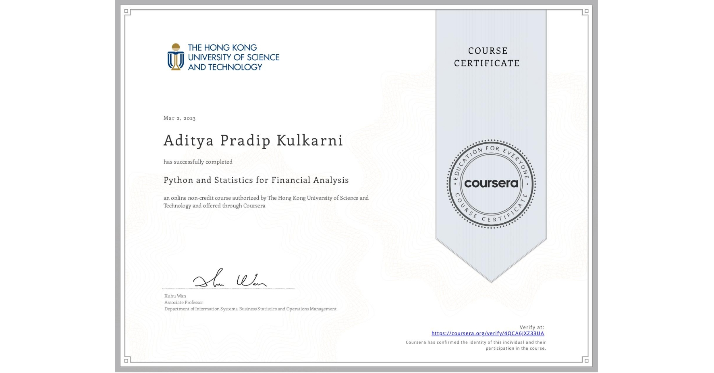
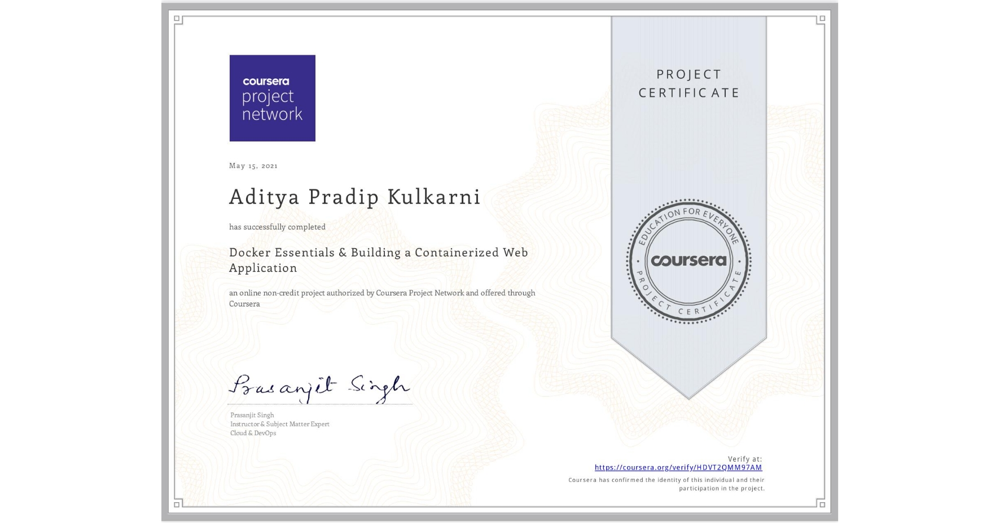
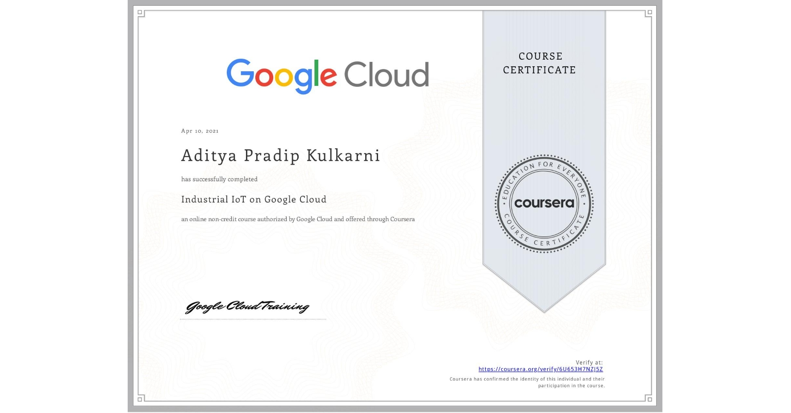

Education
- New York Institute of Technology, MS in Data Science, Jan 2023 - May 2024
- MIT World Peace University, Master's in Big Data Analytics, Sep 2018 - April 2020
- University of Pune, Bachelor's in Computer Science, July 2015 - April 2018
Experience
-
Research Assistant (Institutional Research), New York Institute of Technology, Sep 2023 – May 2024
- • Conducted in-depth analysis of institutional data for 10 peer institutions using Tableau, creating two interactive dashboards that illustrate dashboard charts and 3 key performance indicators (KPIs), enhancing stakeholder understanding and engagement.
- • Designed a Python-based API using the (statsmodel) package to enhance time series forecasting,increasing accuracy from 78% with a Random Forest Regressor to 84% with Sarimax. This tool significantly aids in the analysis of graduation rate trends, benefiting the institutional research team.
-
Research Assistant (Biotech Research), New York Institute of Technology, Aug 2023 – Sep 2023
- • Established a critical feature to dynamically capture research input, streamlining complex data analysis and sequence generation tasks, resulting in a 70% reduction in manual data handling.
- • Created visualizations for various plots, including line plots, connected scatter plots, and bar plots, using libraries such as scikit-learn, pandas, and numpy. Initially performed analysis in Jupyter Notebook and subsequently converted it into an automated application, enhancing the efficiency of next-generation RNA sequencing technologies.
-
Software Engineer, Inteliment Technologies, Sep 2020 – April 2022
- • Handled SQL query debugging and resolved issues for customer, improving query performance by 20% and resolving 90% of customer reported issues within the first 48 hours.
- • Conducted sentiment analysis using NLTK and machine learning models (sklearn) on customer satisfaction data for products sold in different demographic locations. Analyzed 180,000 records with 6 features to understand sentiment variations and customer comments, aiding in location-specific product understanding.
- • Reengineered python code to reduce the execution time from 20 minutes to 10 minutes using SQLAlchemy for ETL on AWS, this code was responsible to build the profitability matrix for the client’s product performance in Asian market
- • Created an IoT data flow framework, conducted groundwork on TCP/IP, MQTT, WSS protocols, and programmed an IoT application using Django Rest Framework on Azure VM for monitoring machine health by analyzing data from vibration sensors connected to 5 honing machines.
- • Streamlined on-premise deployment processes by containerizing them using Docker and automating deployment with Jenkins pipelines, achieving a 60% reduction in manual intervention and deployment time.
Projects
MTA-New-York-City-Dashboard
Retrieved data from 3 MTA NYC Transit's API endpoints for subway feeds, Elevator and Escalator Feeds using Python. Designed a Tableau dashboard to visualize MTA's data.
View on TableauAwards & Certifications





Tech Stack